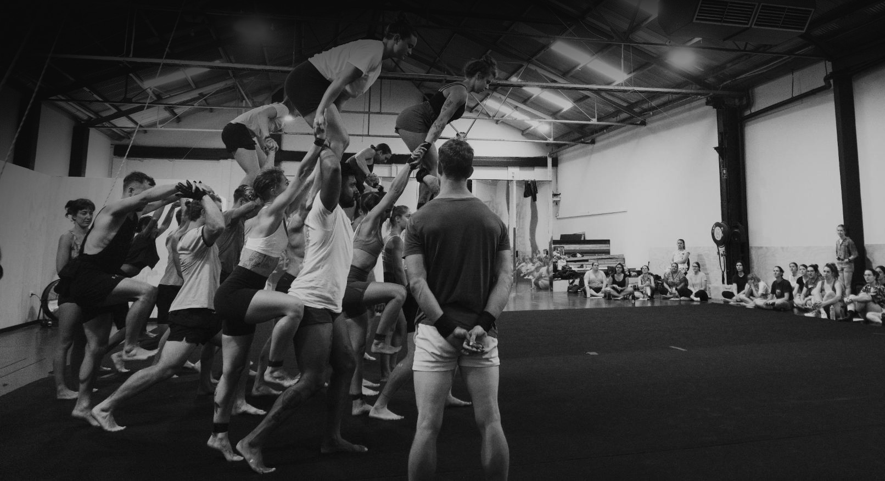

Coaching
After a long career with a focus on my own skill development in acrobatics, performing and choreographing and only having teaching as a side-focus, I've recently made passing on my knowledge and assisting other people my main aim. I love teaching in person in and around Tasmania but I've also been enjoying connecting with people all around the world via technology.
I think I have something useful to offer all skill levels and backgrounds.
I frequently teach floor acrobatics, aerial straps and group acrobatics - primarily toss the girl and tower work.
As a student you'll get a program specifically tailored to you. The programming is generally sold in 4+ week blocks or per program. You will get access to a private library with exclusive videos, where I explain different concepts and show you tricks and progressions for achieving them. You can ask me questions, send me videos and message me anytime. Most communication will be through WhatsApp or Signal.
If you're interested in coaching, either in person or online, you can contact me at lewiewest@gmail.com or leave me a message on Instagram @lewie.west. Below are a few words from some of my students:
Testimonials
Florian, Acrobat from Germany (web: flosh.in)
Lewie inspired me to start acrobatics as an adult.
Just skateboarding throughout my childhood and youth, inspired by freestyle and in particular by Rodney Mullen, I stumbled upon Lewies work on YouTube in about 2009 and was totally flashed. And I came to like him even more when I heard him saying in an interview that he approached acrobatics inspired by skateboarding.
A few years later I joined an acrobatic gymnastics club and soon found my passion in mixed pair hand to hand. I followed Lewies work sporadically throughout the years and in 2020, shortly after some great crisis in my life, I heard that Lewie started coaching. I didn't hesitate a second and got the opportunity to learn from the master himself. Lewie, for me, is like the Rodney Mullen of freestylerange acrobatics.
In the beginning of 2022 I made (without being asked :D) this little website for him, as a gift for and a testimony of his continuing inspiration.